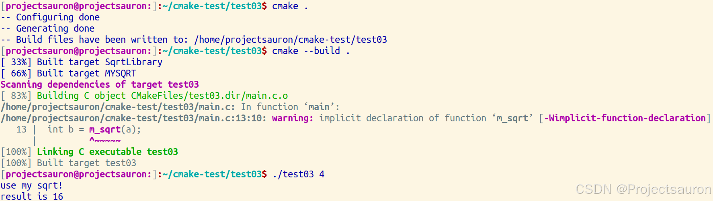
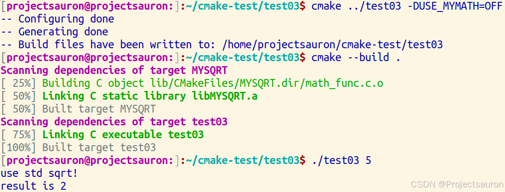

CMake 教程（三）添加库的使用要求
@toc
一、实例——添加库的使用要求
目标参数的使用要求可以更好地控制库或可执行文件的链接和包含行，同时还能在 CMake 内部更好地控制目标的传递属性。利用使用要求的主要命令有：
target_compile_definitions()target_compile_options()target_include_directories()target_link_directories()target_link_options()target_precompile_headers()target_sources()
接下来我们将重构 CMake 教程（二）添加库 中的代码，以使用现代 CMake 方法。我们将让我们的库定义自己的使用要求，以便在必要时将它们传递给其他目标。在这种情况下，MYSQRT 将自行指定所需的包含目录。然后，目标 test03 只需链接到 MYSQRT，而不必担心任何额外的 include 目录。
我们希望规定，链接到 MYSQRT 的任何人都需要包含当前源代码目录，而 MYSQRT 本身则不需要。这可以用 INTERFACE 使用要求来表达。不过，要记住，INTERFACE 意味着消费者需要但生产者不需要的东西。
在 lib/CMakeLists.txt 的末尾，使用带有 INTERFACE 关键字的 target_include_directories()，如下所示：
1 | // lib/CMakeLists.txt |
现在我们已经指定了 MYSQRT 的使用要求，我们可以安全地从顶级 CMakeLists.txt 中删除对 EXTRA_INCLUDES 变量的使用，并从 target_include_directories 中删除 EXTRA_INCLUDES：
1 | // 顶层 CMakeLists.txt |
完整 CMakeLists.txt 代码如下：
1 | // lib/CMakeLists.txt |


再按照上一节的方法来编译运行，效果一致。
请注意，使用这种技术，我们的可执行目标要使用我们的库，唯一要做的就是调用 target_link_libraries()，并输入目标库的名称。在大型项目中，手动指定库依赖关系的传统方法很快就会变得非常复杂。
本博客所有文章除特别声明外，均采用 CC BY-NC-SA 4.0 许可协议。转载请注明来源 Yuxxxxxxxxxx！